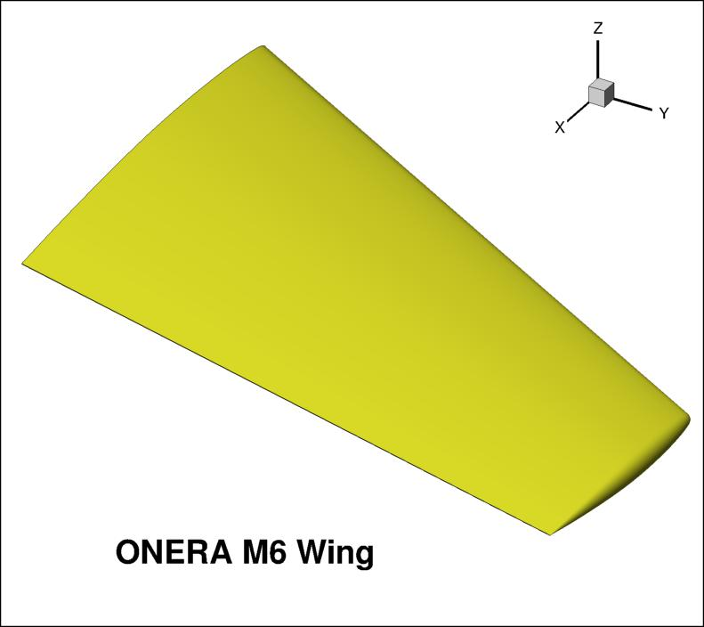
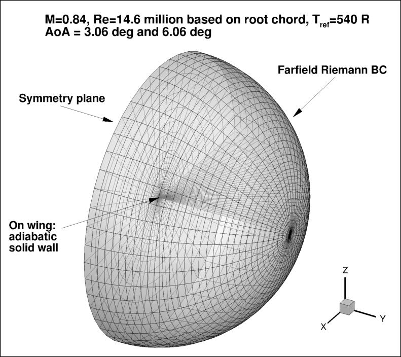

Public Access (formerly Langley Research Center)Turbulence Modeling Resource |
Return to: Turbulence Modeling Resource Home Page
TURBULENCE MODEL NUMERICAL ANALYSIS
3D ONERA M6 Wing Validation Case
The purpose here is to provide a test case for a turbulent flow over a transonic wing.
Over the years, the ONERA M6 experiment
(Schmitt, V. and Charpin, F., "Pressure Distributions on the ONERA-M6-Wing at Transonic Mach Numbers," Experimental
Data Base for Computer Program Assessment. Report of the Fluid Dynamics Panel Working Group 04, AGARD
AR-138, May 1979,
https://www.sto.nato.int/publications/AGARD/AGARD-AR-138/AGARD-AR-138.pdf) has been a widely used case for CFD "validation."
This wing is used here primarily for numerical
analysis of turbulence model simulations; e.g., convergence properties, effect of order of accuracy, etc.

Recently, a group at ONERA has looked into the M6 model and its past experiments in greater detail. See
AIAA Papers 2015-1745,
https://doi.org/10.2514/6.2015-1745 and 2016-1357,
https://doi.org/10.2514/6.2016-1357.
As part of this effort, the group has created a CAD geometry for the wing, provided below.
In this geometry, the trailing edge of the wing has been made sharp for the purposes of this particular CFD
exercise, as described in AIAA Paper 2016-1357.
(The original ONERA M6 wing has a moderately thick trailing edge; see
AileM6_with_thick_TE.igs.)
Additional details are provided in:
ONERA_M6_Test_Case_TMR.pdf.
For reference, the ONERA section coordinates (with blunt T.E.) are provided below. The first file corresponds to the ONERA-D wing section
that lies normal to a generator build at 40.18% chord (the generator build line is shown as a dash-dot line in Figure 1 of
ONERA_M6_Test_Case_TMR.pdf).
The second file (taken from
https://www.grc.nasa.gov/WWW/wind/valid/m6wing/m6wing.html),
corresponds to the streamwise coordinates taken along the root (y=0). Both files are scaled to have 0 < x < 1.
CAD Geometry (with sharp T.E.):
Some of the wing geometry data extracted from the CAD:
Test cases description:

Grid generation programs are available in the following link. Note that the programs create grids that are
normalized so that the root chord = 1. With the new scaling, the following geometry information for computing
forces and moment should be used:
Experimental Cp data:
What to Expect:
(Other turbulence model results may be added in the future.)
Return to: Turbulence Modeling Resource Home Page
RESULTS
LINK TO EQUATIONS
MRR Level
SA-neg
SA-neg eqns
4
Page Curators: Christopher Rumsey,
Ethan Vogel,
Clark Pederson
Last Updated: 11/10/2021